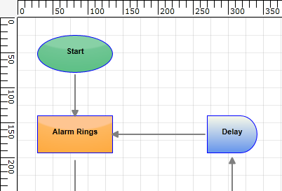
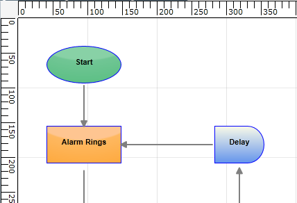
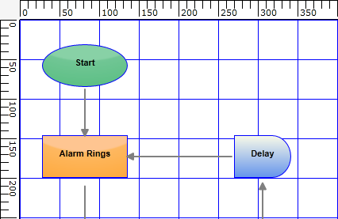

The GridLines feature enables the proper positioning of nodes to render horizontal and vertical grid lines on the drawing area of DiagramControl.
GridLines are used as reference lines to position and view the relative distance between the nodes and reference lines during runtime.
Use Case Scenarios
Users can use GridLines in the Design evironment to easily position objects with the help of reference lines.

Figure 109: GridLines
Showing and Hiding GridLines
The horizontal and vertical grid lines can be enabled or disabled by using the ShowHorizontalGridLine and ShowVerticalGridLine properties, as shown in the following code snippets.
|
[XAML]
<UserControl x:Class="Syncfusion.Diagram.Silverlight.Samples.NodeContentsDemo" xmlns="http://schemas.microsoft.com/winfx/2006/xaml/presentation" xmlns:x="http://schemas.microsoft.com/winfx/2006/xaml" xmlns:syncfusion="clr-namespace:Syncfusion.Windows.Diagram;assembly=Syncfusion.Diagram.Silverlight"> <Grid x:Name="LayoutRoot"> <syncfusion:DiagramControl Grid.Row="1" Name="diagram"> <syncfusion:DiagramControl.Model> <syncfusion:DiagramModel x:Name="diagramModel"> </syncfusion:DiagramModel> </syncfusion:DiagramControl.Model> <syncfusion:DiagramControl.View> <syncfusion:DiagramView x:Name="diagramView" ShowHorizontalGridLine="True" ShowVerticalGridLine="True"> </syncfusion:DiagramView> </syncfusion:DiagramControl.View> </syncfusion:DiagramControl> </Grid> </UserControl> |
|
[C#] DiagramControl dc = new DiagramControl(); dc.IsSymbolPaletteEnabled = true; DiagramView view = new DiagramView(); view.ShowHorizontalGridLine = true; view.ShowVerticalGridLine = true; view.Bounds = new Thickness(0, 0, 1000, 1000); dc.View = view; diagramgrid.Children.Add(dc); |
|
[VB] Dim dc As New DiagramControl() dc.IsSymbolPaletteEnabled = True Dim view As New DiagramView() view.ShowHorizontalGridLine = True view.ShowVerticalGridLine = True view.Bounds = New Thickness(0, 0, 1000, 1000) dc.View = view diagramgrid.Children.Add(dc) |
Figure 110: GridLines
Customizing the GridLine Offset
The vertical and horizontal spacing between the grid lines can be customized by using the GridVerticalOffset and GridHorizontalOffset properties, as shown in the following code snippets. The default value for the GridVerticalOffset and GridHorizontalOffset properties is 25d.
|
[XAML] <UserControl x:Class="Syncfusion.Diagram.Silverlight.Samples.NodeContentsDemo" xmlns="http://schemas.microsoft.com/winfx/2006/xaml/presentation" xmlns:x="http://schemas.microsoft.com/winfx/2006/xaml" xmlns:syncfusion="clr-namespace:Syncfusion.Windows.Diagram;assembly=Syncfusion.Diagram.Silverlight"> <Grid x:Name="LayoutRoot"> <syncfusion:DiagramControl Grid.Row="1" Name="diagram"> <syncfusion:DiagramControl.Model> <syncfusion:DiagramModel x:Name="diagramModel"> </syncfusion:DiagramModel> </syncfusion:DiagramControl.Model> <syncfusion:DiagramControl.View> <syncfusion:DiagramView x:Name="diagramView" ShowHorizontalGridLine="True" ShowVerticalGridLine="True"> <syncfusion:DiagramView.Page> <syncfusion:DiagramPage GridHorizontalOffset="100" GridVerticalOffset="100"/> </syncfusion:DiagramView.Page> </syncfusion:DiagramView> </syncfusion:DiagramControl.View> </syncfusion:DiagramControl> </Grid> </UserControl>
|
|
[C#] DiagramControl dc = new DiagramControl(); dc.IsSymbolPaletteEnabled = true; DiagramView view = new DiagramView(); view.ShowHorizontalGridLine = true; view.ShowVerticalGridLine = true; (view.Page as DiagramPage).GridHorizontalOffset = 100; (view.Page as DiagramPage).GridVerticalOffset = 100; dc.View = view; diagramgrid.Children.Add(dc); |
|
[VB] Dim dc As New DiagramControl() dc.IsSymbolPaletteEnabled = True Dim view As New DiagramView() view.ShowHorizontalGridLine = True view.ShowVerticalGridLine = True TryCast(view.Page, DiagramPage).GridHorizontalOffset = 100 TryCast(view.Page, DiagramPage).GridVerticalOffset = 100 dc.View = view diagramgrid.Children.Add(dc) |

Figure 111: Customized GridLine Offset
Customizing the GridLineStyle
The Brush and StrokeThickness of the grid lines can be customized by using DiagramView’s HorizontalGridLineStyle and VerticalGridLineStyle properties, as shown in the following code snippet.
|
[C#] DiagramView diagramView = new DiagramView(); diagramView.HorizontalGridLineStyle.Brush = new SolidColorBrush(Colors.Black); diagramView.HorizontalGridLineStyle.StrokeThickness = 1d; |
|
[VB] Dim diagramView As New DiagramView() diagramView.HorizontalGridLineStyle.Brush = New SolidColorBrush(Colors.Black) diagramView.HorizontalGridLineStyle.StrokeThickness = 1R |

Figure 112: GridLineStyle
Properties
The properties of the GridLines feature are described in the following tabulation:
Table 5: Properties Table
|
Property |
Description |
Type |
Data Type |
Reference links |
|
ShowVerticalGridLine |
Gets or sets a value indicating whether the vertical grid lines will be displayed or not. The default value is False. |
Dependency property |
Binary, true/false |
Not applicable |
|
ShowHorizontalGridLine |
Gets or sets a value indicating whether the horizontal grid lines will be displayed or not. The default value is False. |
Dependency property |
Binary, true/false |
Not applicable |
|
GridHorizontalOffset |
Gets or sets the HorizontalOffset value for the grid. |
CLR property |
Double |
Not applicable |
|
GridVerticalOffset |
Gets or sets the VerticalOffset value for the grid. |
CLR property |
Double |
Not applicable |
|
HorizontalGridLineStyle |
Gets or sets the GridLineStyle for the horizontal grid lines. |
Dependency property |
GridLineStyle |
Not applicable |
|
VerticalGridLineStyle |
Gets or sets the GridLineStyle for the vertical grid lines. |
Dependency property |
GridLineStyle |
Not applicable |
Sample Link
To view a sample:
Open the Diagram Sample Browser from the dashboard. (Refer to the Samples and Location chapter.)
Navigate to Product Showcase -> Features Demo.